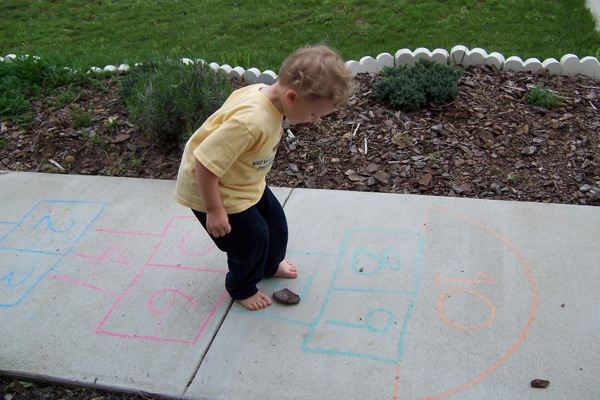

The Old Shelf / India / Hopscotch
Hopscotch with a rock
India
Hopscotch
not dated
Closest picture for stapu. It is hopscotch, and the file does not place it in India.
Stills only.

A child playing hopscotch with a rock. The grid is chalk on concrete. The file does not name a country, so this is not labeled as stapu in a particular Indian lane.
Bethany Nowviskie. CC BY 2.0. Source page